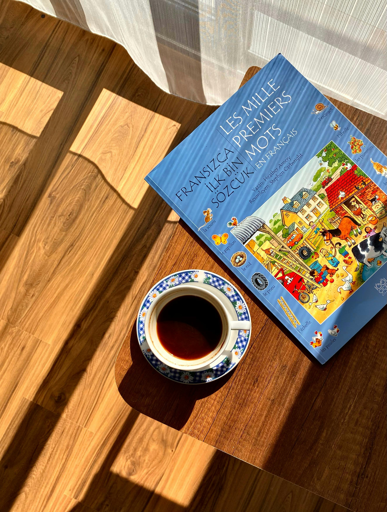

英語とフランス語の関係とは？
歴史・共通点・語彙の影響をわかりやすく解説
英語とフランス語は、現在では別の言語として扱われています。
しかし実際には、この二つの言語は非常に深い関係を持っています。
英語を勉強していると、
・nation
・important
・government
・restaurant
・culture
など、フランス語に似た単語を多く見かけます。
一方で、フランス語を学ぶ人も、
・information
・possible
・university
・animal
など、英語と共通する語彙の多さに驚くことがあります。
なぜこれほど似ているのでしょうか。
その理由は、中世ヨーロッパの歴史にあります。
この記事では、
・言語的な違い
・歴史的背景
・ノルマン・コンクエスト
・語彙への影響
・発音や文法の比較
を中心に、英語とフランス語の関係をわかりやすく解説します。
① 英語とフランス語は「親戚」のような関係
まず重要なのは、英語とフランス語は 同じ語族ではない という点です。
英語はゲルマン語
英語は、
・ドイツ語
・オランダ語
・デンマーク語
などと同じ ゲルマン語派 に属しています。
英語の基本語彙には、ゲルマン語由来の単語が多く存在します。
house（家）
water（水）
eat（食べる）
strong（強い）
これらはドイツ語ともよく似ています。
フランス語はロマンス語
一方、フランス語はラテン語から発展した ロマンス語 です。
・スペイン語
・イタリア語
・ポルトガル語
などが同じ仲間です。
つまり、もともと英語とフランス語は 別系統の言語 でした。
それにもかかわらず、現在の英語には大量のフランス語語彙が存在しています。
② 英語とフランス語の関係を変えた「ノルマン・コンクエスト」
1066年の大事件
1066年、 William the Conqueror （征服王ウィリアム）率いるノルマン人がイングランドを征服しました。
これを ノルマン・コンクエスト （Norman Conquest） と呼びます。
ノルマン人はもともと北欧系でしたが、 フランス北部に定住し、 フランス語を話していました。
約300年間フランス語が支配層の言語に
征服後のイングランドでは、
・支配階級 → フランス語
・庶民 → 英語
という状態になります。
王族、貴族、裁判、政治、学問などではフランス語が使われ、 英語は庶民の言葉として扱われました。
この時代に英語はフランス語から大量の語彙を取り入れ、 現在の英語の基盤が作られました。
③ 英語に入った大量のフランス語
政治・法律の単語
支配層がフランス語を使用していたため、 政治や法律関連の語彙はフランス語由来のものが非常に多くなりました。
government → gouvernement
parliament → parlement
judge → juge
court → cour
justice → justice
現在でも英語の法律用語には、 フランス語系語彙が多く残っています。
文化・芸術・料理
beauty → beauté
art → art
music → musique
restaurant → restaurant
cuisine → cuisine
特に料理関係では、 フランス語は現在でも世界的影響力を持っています。
「動物」と「肉」の単語が違う理由
英語には、
cow（牛）
pig（豚）
などゲルマン語系の単語があります。
しかし食卓に出る肉になると、
beef（牛肉）
pork（豚肉）
のようにフランス語由来の単語へ変化します。
これは、
・家畜を育てた庶民 → 英語
・食事をした貴族 → フランス語
という中世社会を反映した有名な例です。
④ 現代英語の語彙に残るフランス語の影響
英語はもともとゲルマン語でしたが、 ノルマン・コンクエスト以降、 フランス語の影響を強く受けました。
現在の英語では、 語彙の多くにフランス語・ラテン語由来の単語が存在します。
ゲルマン語系とフランス語系の違い
英語では、
・短く日常的 → ゲルマン語系
・抽象的・フォーマル → フランス語系
という傾向があります。
ask → inquire
begin → commence
help → assist
freedom → liberty
そのため、英語には 「似た意味を持つ単語」が複数存在することがあります。
⑤ 発音と綴りへの影響
フランス語由来の発音
英語にはフランス語から入った発音や綴りが数多くあります。
machine
police
garage
ballet
特に、
・-tion
・-age
・-ique
などの語尾にはフランス語的特徴が残っています。
なぜ英語の綴りは難しいのか
英語の複雑な綴りには、 フランス語の影響も関係しています。
ノルマン人支配後、 フランス系書記官が英語を書き記すようになり、 綴りが変化しました。
cw → qu
hus → house
など、フランス式表記が導入された例もあります。

⑥ フランス語から見た英語
現在では、世界的な影響力を持つ言語は 英語 です。
そのため、逆にフランス語へ英語由来の単語が大量に流入しています。
le weekend → weekend
le parking → parking
le smartphone → smartphone
特にIT、SNS、ビジネス関連では英語の影響が非常に強くなっています。
⑦ なぜフランスは英語化を防ごうとするのか
現代ではインターネットやSNSの発展によって、 世界中で英語由来の単語が急速に広がっています。
日本語でも、
・スマホ（smartphone）
・メール（mail）
・ダウンロード（download）
・SNS
など、多くの英語が使われています。
フランスでも同じように英語の影響が強まっていますが、 フランスは国家レベルで 「フランス語を守る政策」 を行っていることで有名です。
Académie française（アカデミー・フランセーズ）とは？
フランス語を管理・保護する機関として、 1635年に設立されたのが Académie française です。
目的は、
・フランス語の統一
・正しい文法の制定
・新語の管理
・外国語流入の調整
などです。
現在でも辞書編集や言語政策に関わっています。
なぜ英語化を嫌うのか？
① フランス語への誇り
18〜19世紀頃、フランス語は外交や文化の国際語として使われていました。
しかし20世紀以降、アメリカの影響力拡大により、 国際語の地位は英語へ移ります。
その結果、 「フランス語が英語に押されている」 という危機感が強まりました。
② 言語＝文化という考え
フランスでは、 「言語は文化そのもの」 という考えが非常に強いです。
日常生活が英語だらけになると、
・フランス独自の文化
・考え方
・表現方法
まで失われると考えられています。
⑧ 実際に置き換えられた単語
email → courriel
最も有名な例が courriel です。
これは、
courrier（郵便）
＋
électronique（電子）
を組み合わせた単語です。
ただし、実際の日常会話では email や mail も広く使われています。
smartphone → téléphone intelligent
直訳すると 「賢い電話」 という意味です。
ただ、現実では smartphone を使う人も多く、 若者ほど英語表現を使う傾向があります。
hashtag → mot-dièse
SNS用語でも英語化が進んでいます。
ただし、現実では hashtag の方が一般的です。
「守るフランス語」と現実
若者の会話では、
・le weekend
・le parking
・le shopping
・le smartphone
など英語由来語が普通に使われています。
つまり、 政府の推奨と実際の会話には差があるのです。
⑨ フランス語を守る法律「トゥーボン法」
1994年には、 トゥーボン法（Toubon Law） が制定されました。
この法律では、
・公共広告
・政府文書
・職場
・教育
などでフランス語使用を重視しています。
広告で英語を使う場合、 フランス語訳が必要になることもあります。
世界的に見ても珍しい 言語保護政策 の一つです。
⑩ 英語とフランス語を一緒に学ぶメリット
語彙を覚えやすい
英語とフランス語には共通語彙が多いため、 片方を学ぶともう片方にも役立ちます。
important → important
possible → possible
different → différent
nation → nation
ヨーロッパ言語への理解が深まる
英語とフランス語を比較すると、
・ゲルマン語
・ロマンス語
・ラテン語
の関係が理解しやすくなります。
スペイン語やイタリア語学習にも役立ちます。
まとめ
英語とフランス語は、もともとは異なる系統の言語でした。
しかし1066年の
ノルマン・コンクエストによって、
英語はフランス語から巨大な影響を受けます。
特に、
・政治
・法律
・学問
・芸術
・料理
などの分野では、
フランス語由来の語彙が大量に取り入れられました。
現代英語は、
「ゲルマン語の骨格にフランス語・ラテン語語彙が大量に加わった言語」
とも言えます。
英語とフランス語を比較しながら学ぶことで、
単語理解や語源理解が深まり、
外国語学習全体にも役立つでしょう。